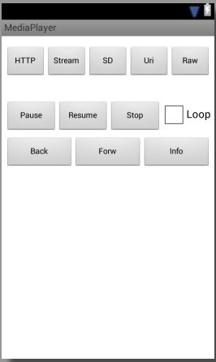

В этом уроке:
- используем MediaPlayer
MediaPlayer – класс, который позволит вам проигрывать аудио/видео файлы с возможностью сделать паузу и перемотать в нужную позицию. MediaPlayer умеет работать с различными источниками, это может быть: путь к файлу (на SD или в инете), адрес потока, Uri или файл из папки res/raw.
Напишем небольшое приложение аудио-плеер и используем в нем все эти возможности.
Создадим проект:
Project name: P1261_MediaPlayer
Build Target: Android 4.0
Application name: MediaPlayer
Package name: ru.startandroid.develop.p1261mediaplayer
Create Activity: MainActivity
Добавляем строки в strings.xml:
<string name="http">HTTP</string>
<string name="stream">Stream</string>
<string name="sd">SD</string>
<string name="uri">Uri</string>
<string name="raw">Raw</string>
<string name="pause">Pause</string>
<string name="resume">Resume</string>
<string name="stop">Stop</string>
<string name="loop">Loop</string>
<string name="backward">Back</string>
<string name="forward">Forw</string>
<string name="info">Info</string>layout-файл main.xml:
<?xml version="1.0" encoding="utf-8"?>
<RelativeLayout
xmlns:tools="http://schemas.android.com/tools"
xmlns:android="http://schemas.android.com/apk/res/android"
android:layout_width="match_parent"
android:layout_height="match_parent"
android:padding="5dp"
tools:context=".MainActivity">
<LinearLayout
android:id="@+id/linearLayout1"
android:layout_width="wrap_content"
android:layout_height="wrap_content"
android:layout_alignParentLeft="true"
android:layout_alignParentRight="true"
android:layout_alignParentTop="true"
android:layout_marginTop="10dp">
<Button
android:id="@+id/btnStartHttp"
android:layout_width="0dp"
android:layout_height="wrap_content"
android:layout_weight="1"
android:onClick="onClickStart"
android:text="@string/http"
android:textSize="12sp">
</Button>
<Button
android:id="@+id/btnStartStream"
android:layout_width="0dp"
android:layout_height="wrap_content"
android:layout_weight="1"
android:onClick="onClickStart"
android:text="@string/stream"
android:textSize="12sp">
</Button>
<Button
android:id="@+id/btnStartSD"
android:layout_width="0dp"
android:layout_height="wrap_content"
android:layout_weight="1"
android:onClick="onClickStart"
android:text="@string/sd"
android:textSize="12sp">
</Button>
<Button
android:id="@+id/btnStartUri"
android:layout_width="0dp"
android:layout_height="wrap_content"
android:layout_weight="1"
android:onClick="onClickStart"
android:text="@string/uri"
android:textSize="12sp">
</Button>
<Button
android:id="@+id/btnStartRaw"
android:layout_width="0dp"
android:layout_height="wrap_content"
android:layout_weight="1"
android:onClick="onClickStart"
android:text="@string/raw"
android:textSize="12sp">
</Button>
</LinearLayout>
<LinearLayout
android:id="@+id/linearLayout2"
android:layout_width="wrap_content"
android:layout_height="wrap_content"
android:layout_alignParentLeft="true"
android:layout_alignParentRight="true"
android:layout_below="@+id/linearLayout1"
android:layout_marginTop="30dp">
<Button
android:id="@+id/btnPause"
android:layout_width="0dp"
android:layout_height="wrap_content"
android:layout_weight="1"
android:onClick="onClick"
android:text="@string/pause"
android:textSize="12sp">
</Button>
<Button
android:id="@+id/btnResume"
android:layout_width="0dp"
android:layout_height="wrap_content"
android:layout_weight="1"
android:onClick="onClick"
android:text="@string/resume"
android:textSize="12sp">
</Button>
<Button
android:id="@+id/btnStop"
android:layout_width="0dp"
android:layout_height="wrap_content"
android:layout_weight="1"
android:onClick="onClick"
android:text="@string/stop"
android:textSize="12sp">
</Button>
<CheckBox
android:id="@+id/chbLoop"
android:layout_width="wrap_content"
android:layout_height="wrap_content"
android:text="@string/loop">
</CheckBox>
</LinearLayout>
<LinearLayout
android:id="@+id/linearLayout3"
android:layout_width="wrap_content"
android:layout_height="wrap_content"
android:layout_alignParentLeft="true"
android:layout_alignParentRight="true"
android:layout_below="@+id/linearLayout2"
android:layout_marginTop="10dp">
<Button
android:id="@+id/btnBackward"
android:layout_width="0dp"
android:layout_height="wrap_content"
android:layout_weight="1"
android:onClick="onClick"
android:text="@string/backward"
android:textSize="12sp">
</Button>
<Button
android:id="@+id/btnForward"
android:layout_width="0dp"
android:layout_height="wrap_content"
android:layout_weight="1"
android:onClick="onClick"
android:text="@string/forward"
android:textSize="12sp">
</Button>
<Button
android:id="@+id/btnInfo"
android:layout_width="0dp"
android:layout_height="wrap_content"
android:layout_weight="1"
android:onClick="onClick"
android:text="@string/info"
android:textSize="12sp">
</Button>
</LinearLayout>
</RelativeLayout>Так это выглядит на экране

Кнопки верхнего ряда запускают проигрывание треков из различных источников. Кнопки среднего ряда – это пауза, возобновление, стоп и чекбокс повторения трека. А в нижнем ряду кнопки перемотки назад/вперед и вывод в лог текущей информации.
Создайте папку res/raw и положите в нее какой-нить звуковой файл с именем explosion.mp3. Например, его можно скачать здесь - http://dl.dropboxusercontent.com/u/6197740/explosion.mp3.
MainActivity.java:
package ru.startandroid.develop.p1261mediaplayer;
import java.io.IOException;
import android.app.Activity;
import android.content.ContentUris;
import android.media.AudioManager;
import android.media.MediaPlayer;
import android.media.MediaPlayer.OnCompletionListener;
import android.media.MediaPlayer.OnPreparedListener;
import android.net.Uri;
import android.os.Bundle;
import android.os.Environment;
import android.util.Log;
import android.view.View;
import android.widget.CheckBox;
import android.widget.CompoundButton;
import android.widget.CompoundButton.OnCheckedChangeListener;
public class MainActivity extends Activity implements OnPreparedListener,
OnCompletionListener {
final String LOG_TAG = "myLogs";
final String DATA_HTTP = "http://dl.dropboxusercontent.com/u/6197740/explosion.mp3";
final String DATA_STREAM = "http://online.radiorecord.ru:8101/rr_128";
final String DATA_SD = Environment
.getExternalStoragePublicDirectory(Environment.DIRECTORY_MUSIC)
+ "/music.mp3";
final Uri DATA_URI = ContentUris
.withAppendedId(
android.provider.MediaStore.Audio.Media.EXTERNAL_CONTENT_URI,
13359);
MediaPlayer mediaPlayer;
AudioManager am;
CheckBox chbLoop;
@Override
protected void onCreate(Bundle savedInstanceState) {
super.onCreate(savedInstanceState);
setContentView(R.layout.main);
am = (AudioManager) getSystemService(AUDIO_SERVICE);
chbLoop = (CheckBox) findViewById(R.id.chbLoop);
chbLoop.setOnCheckedChangeListener(new OnCheckedChangeListener() {
@Override
public void onCheckedChanged(CompoundButton buttonView,
boolean isChecked) {
if (mediaPlayer != null)
mediaPlayer.setLooping(isChecked);
}
});
}
public void onClickStart(View view) {
releaseMP();
try {
switch (view.getId()) {
case R.id.btnStartHttp:
Log.d(LOG_TAG, "start HTTP");
mediaPlayer = new MediaPlayer();
mediaPlayer.setDataSource(DATA_HTTP);
mediaPlayer.setAudioStreamType(AudioManager.STREAM_MUSIC);
Log.d(LOG_TAG, "prepareAsync");
mediaPlayer.setOnPreparedListener(this);
mediaPlayer.prepareAsync();
break;
case R.id.btnStartStream:
Log.d(LOG_TAG, "start Stream");
mediaPlayer = new MediaPlayer();
mediaPlayer.setDataSource(DATA_STREAM);
mediaPlayer.setAudioStreamType(AudioManager.STREAM_MUSIC);
Log.d(LOG_TAG, "prepareAsync");
mediaPlayer.setOnPreparedListener(this);
mediaPlayer.prepareAsync();
break;
case R.id.btnStartSD:
Log.d(LOG_TAG, "start SD");
mediaPlayer = new MediaPlayer();
mediaPlayer.setDataSource(DATA_SD);
mediaPlayer.setAudioStreamType(AudioManager.STREAM_MUSIC);
mediaPlayer.prepare();
mediaPlayer.start();
break;
case R.id.btnStartUri:
Log.d(LOG_TAG, "start Uri");
mediaPlayer = new MediaPlayer();
mediaPlayer.setDataSource(this, DATA_URI);
mediaPlayer.setAudioStreamType(AudioManager.STREAM_MUSIC);
mediaPlayer.prepare();
mediaPlayer.start();
break;
case R.id.btnStartRaw:
Log.d(LOG_TAG, "start Raw");
mediaPlayer = MediaPlayer.create(this, R.raw.explosion);
mediaPlayer.start();
break;
}
} catch (IOException e) {
e.printStackTrace();
}
if (mediaPlayer == null)
return;
mediaPlayer.setLooping(chbLoop.isChecked());
mediaPlayer.setOnCompletionListener(this);
}
private void releaseMP() {
if (mediaPlayer != null) {
try {
mediaPlayer.release();
mediaPlayer = null;
} catch (Exception e) {
e.printStackTrace();
}
}
}
public void onClick(View view) {
if (mediaPlayer == null)
return;
switch (view.getId()) {
case R.id.btnPause:
if (mediaPlayer.isPlaying())
mediaPlayer.pause();
break;
case R.id.btnResume:
if (!mediaPlayer.isPlaying())
mediaPlayer.start();
break;
case R.id.btnStop:
mediaPlayer.stop();
break;
case R.id.btnBackward:
mediaPlayer.seekTo(mediaPlayer.getCurrentPosition() - 3000);
break;
case R.id.btnForward:
mediaPlayer.seekTo(mediaPlayer.getCurrentPosition() + 3000);
break;
case R.id.btnInfo:
Log.d(LOG_TAG, "Playing " + mediaPlayer.isPlaying());
Log.d(LOG_TAG, "Time " + mediaPlayer.getCurrentPosition() + " / "
+ mediaPlayer.getDuration());
Log.d(LOG_TAG, "Looping " + mediaPlayer.isLooping());
Log.d(LOG_TAG,
"Volume " + am.getStreamVolume(AudioManager.STREAM_MUSIC));
break;
}
}
@Override
public void onPrepared(MediaPlayer mp) {
Log.d(LOG_TAG, "onPrepared");
mp.start();
}
@Override
public void onCompletion(MediaPlayer mp) {
Log.d(LOG_TAG, "onCompletion");
}
@Override
protected void onDestroy() {
super.onDestroy();
releaseMP();
}
}Разбираемся. Сначала создаем константы-пути, которые будет использовать проигрыватель. Это файл в инете (DATA_HTTP), поток в инете (DATA_STREAM), файл на флэшке (DATA_SD) и Uri на мелодию из системы (DATA_URI). Для SD и Uri укажите ваши значения, чтобы такие файлы существовали. (По получению Uri в конце урока есть вспомогательный код)
В onCreate получаем AudioManager, находим на экране чекбокс и настраиваем так, чтобы он включал/выключал режим повтора для плеера.
onClickStart – метод для обработки нажатий на кнопки верхнего ряда. Сначала мы освобождаем ресурсы текущего проигрывателя. Затем в зависимости от нажатой кнопки стартуем проигрывание. Какие методы для этого используются?
setDataSource – задает источник данных для проигрывания
setAudioStreamType – задает аудио-поток, который будет использован для проигрывания. Их существует несколько: STREAM_MUSIC, STREAM_NOTIFICATION и п. Подробнее их можно посмотреть в доках по AudioManager. Предполагаю, что созданы они для того, чтобы можно было задавать разные уровни громкости, например, играм, звонкам и уведомлениям. Этот метод можно и пропустить, если вам не надо явно указывать какой-то поток. Насколько я понял, по умолчанию используется STREAM_MUSIC.
Далее используется метод prepare или prepareAsync (в паре с OnPreparedListener). Эти методы подготавливают плеер к проигрыванию. И, как понятно из названия, prepareAsync делает это асинхронно, и, когда все сделает, сообщит об этом слушателю из метода setOnPreparedListener. А метод prepare работает синхронно. Соотвественно, если хотим прослушать файл из инета, то используем prepareAsync, иначе наше приложение повесится, т.к. заблокируется основной поток, который обслуживает UI.
Ну и метод start запускает проигрывание.
В случае с raw-файлом мы используем метод create. В нем уже будет выполнен метод prepare и нам остается только выполнить start.
Далее мы для плеера включаем/выключаем повтор (setLooping) в зависимости от текущего значения чекбокса. И вешаем слушателя (setOnCompletionListener), который получит уведомление, когда проигрывание закончится.
В методе releaseMP мы выполняем метод release. Он освобождает используемые проигрывателем ресурсы, его рекомендуется вызывать когда вы закончили работу с плеером. Более того, документация рекомендует вызывать этот метод и при onPause/onStop, если нет острой необходимости держать объект.
В методе onClick мы обрабатываем нажатия на кнопки управления проигрывателем. Какие здесь используются методы?
pause – приостанавливает проигрывание
start – возобновляет проигрывание
stop – останавливает проигрывание
seekTo – переход к определенной позиции трека (в милисекундах)
getCurrentPosition – получить текущую позицию (в милисекундах)
getDuration – общая продолжительность трека
isLooping – включен ли режим повтора
getStreamVolume – получить уровень громкости указанного потока
Далее идут методы
onPrepared – метод слушателя OnPreparedListener. Вызывается, когда плеер готов к проигрыванию.
onCompletion – метод слушателя OnCompletionListener. Вызывается, когда достигнут конец проигрываемого содержимого.
В методе onDestroy обязательно освобождаем ресурсы проигрывателя.
В манифесте добавляем права на интернет - android.permission.INTERNET.
Все сохраняем, запускаем приложение. Дизайн получившегося плеера, конечно, не ахти какой :), но нас сейчас интересует функционал.
Еще раз перечислю возможные действия. Нажимая верхние кнопки, мы запускаем проигрывание из различных источников. Кнопки среднего ряда позволят нам поставить паузу, возобновить/остановить проигрывание и включить режим повтора. Кнопки нижнего ряда перематывают назад/вперед на 3 сек (3000 мсек) и выводят инфу в лог.
Я включу проигрывание файла с SD и выведу инфу в лог (кнопка Info).
start SD
Playing true
Time 4702 / 170588
Looping false
Volume 10
Проигрывание идет, текущая позиция – 4-я секунда из 170, режим повтора выключен, громкость - 10.
Уменьшу громкость (кнопками устройства или эмулятора), включу режим повтора (чекбокс Loop), поставлю паузу (кнопка Pause) и снова выведу инфу в лог:
Playing false
Time 46237 / 170588
Looping true
Volume 6
Видим, что проигрывание остановилось, текущая позиция уже 46 секунд, режим повтора включен, а громкость уменьшилась до 6.
Теперь включу проигрывание потока (кнопка Stream). Смотрим лог:
08:49:13.799: D/myLogs(18805): start Stream
08:49:13.809: D/myLogs(18805): prepareAsync
08:49:27.589: D/myLogs(18805): onPrepared
Обратите внимание, сколько прошло времени с начала (prepareAsync) до завершения (onPrepared) подготовки проигрывателя – 14 секунд. Если бы мы использовали метод prepare, а не prepareAsync, то наше приложение было бы недоступно все это время.
Расскажу еще про несколько методов, которые я не использовал в примере, но о которых стоит знать.
Метод reset – сбрасывает плеер в начальное состояние, после него необходимо снова вызвать setDataSource и prepare. Похож на onRelease, но позволяет продолжить работу с этим же объектом. А вот после onRelease надо создавать новый объект MediaPlayer.
Метод setOnBufferingUpdateListener устанавливает слушателя буферизации проигрываемого потока. По идее слушатель будет получать процент буферизации, но у меня оно как-то странно работает - показывает или 0 или 100.
Метод setOnErrorListener устанавливает слушателя для получения ошибок. Особенно это полезно при методe prepareAsync. Если в ходе этого метода возникнут ошибки, то их можно поймать только так.
Метод setWakeMode позволяет ставить стандартную (PowerManager.WakeLock) блокировку на время проигрывания, указав тип блокировки. Не забудьте в манифесте добавить права на WAKE_LOCK.
По поводу видео. Метод setDisplay позволяет указать плееру, куда выводить изображение. Размещаете на экране компонент SurfaceView (вкладка Advanced), вызываете его метод getHolder и полученный объект передаете в setDisplay. Плеер выведет изображение на этот компонент.
Чтобы узнать размер проигрываемого изображения можно использовать методы getVideoHeight и getVideoWidth.
В документацие класса MediaPlayer есть хорошая схема состояний плеера. Она кажется запутанной, но если посидеть и поразбираться, то вполне можно все понять. Схема полезная, советую вникнуть.
А здесь можно посмотреть какие форматы поддерживаются системой.
Также документация предоставляет нам код, который позволит просмотреть существующие медиа-файлы в системе:
ContentResolver contentResolver = getContentResolver();
Uri uri = android.provider.MediaStore.Audio.Media.EXTERNAL_CONTENT_URI;
Cursor cursor = contentResolver.query(uri, null, null, null, null);
if (cursor == null) {
// query failed, handle error.
} else if (!cursor.moveToFirst()) {
// no media on the device
} else {
int titleColumn = cursor
.getColumnIndex(android.provider.MediaStore.Audio.Media.TITLE);
int idColumn = cursor
.getColumnIndex(android.provider.MediaStore.Audio.Media._ID);
do {
long thisId = cursor.getLong(idColumn);
String thisTitle = cursor.getString(titleColumn);
// ...process entry...
} while (cursor.moveToNext());
}